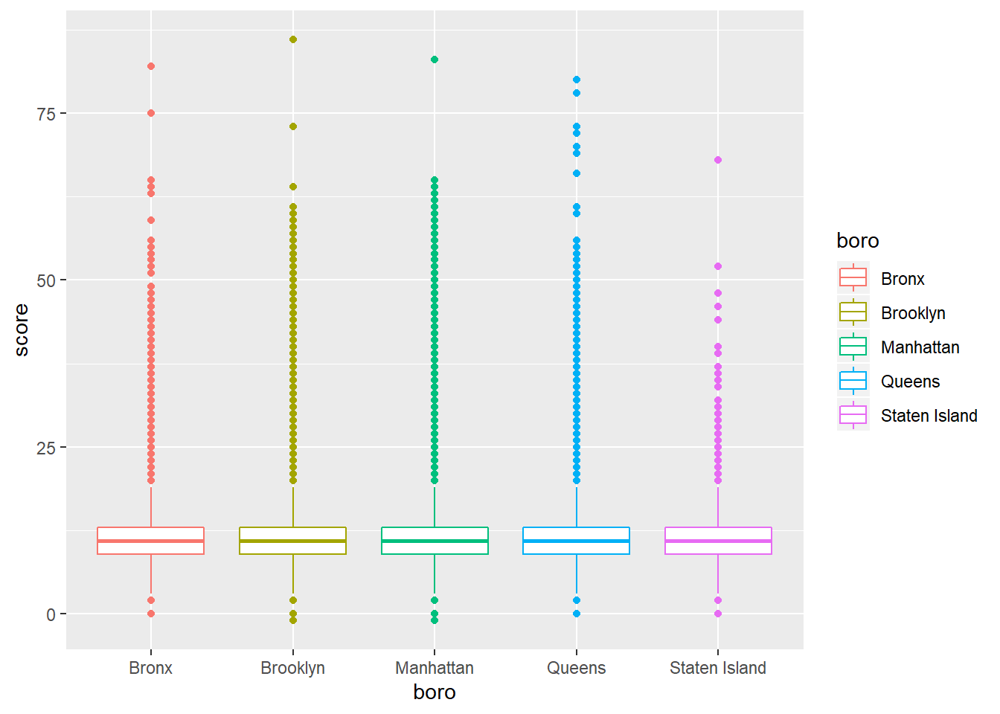

library(tidyverse)
library(viridis)
library(p8105.datasets)
library(plotly)#how much to set seed? should i make this out of my files i made during class since they connect to the website or create a whole new one?
set.seed(1)
data("rest_inspec")
summary(rest_inspec)## action boro building
## Length:397584 Length:397584 Length:397584
## Class :character Class :character Class :character
## Mode :character Mode :character Mode :character
##
##
##
##
## camis critical_flag cuisine_description
## Min. :30075445 Length:397584 Length:397584
## 1st Qu.:41227319 Class :character Class :character
## Median :41622444 Mode :character Mode :character
## Mean :44534756
## 3rd Qu.:50011150
## Max. :50071063
##
## dba inspection_date inspection_type
## Length:397584 Min. :1900-01-01 00:00:00 Length:397584
## Class :character 1st Qu.:2015-03-17 00:00:00 Class :character
## Mode :character Median :2016-02-03 00:00:00 Mode :character
## Mean :2015-09-27 22:03:03
## 3rd Qu.:2016-12-13 00:00:00
## Max. :2017-10-17 00:00:00
##
## phone record_date score
## Length:397584 Min. :2017-10-19 06:00:49 Min. : -2.00
## Class :character 1st Qu.:2017-10-19 06:00:49 1st Qu.: 11.00
## Mode :character Median :2017-10-19 06:00:49 Median : 15.00
## Mean :2017-10-19 06:00:49 Mean : 18.93
## 3rd Qu.:2017-10-19 06:00:49 3rd Qu.: 24.00
## Max. :2017-10-19 06:00:59 Max. :151.00
## NA's :22642
## street violation_code violation_description
## Length:397584 Length:397584 Length:397584
## Class :character Class :character Class :character
## Mode :character Mode :character Mode :character
##
##
##
##
## zipcode grade grade_date
## Min. :10001 Length:397584 Min. :2012-05-01 00:00:00
## 1st Qu.:10022 Class :character 1st Qu.:2015-03-30 00:00:00
## Median :10468 Mode :character Median :2016-02-17 00:00:00
## Mean :10675 Mean :2016-01-31 05:45:17
## 3rd Qu.:11229 3rd Qu.:2016-12-13 00:00:00
## Max. :11697 Max. :2017-10-17 00:00:00
## NA's :5 NA's :204287rest_inspec =
rest_inspec %>%
janitor::clean_names() %>%
filter(grade %in% c("A", "B", "C"), boro != "Missing") %>%
mutate(boro = str_to_title(boro)) %>%
mutate(boro = as.factor(boro),
critical_flag = as.ordered(critical_flag))rest_inspec %>%
group_by(boro) %>%
ggplot(aes(x = boro, y = score, color = boro)) + geom_boxplot()## Warning: Removed 3 rows containing non-finite values (stat_boxplot).
set.seed(1)
data(nyc_airbnb) nyc_airbnb = nyc_airbnb %>% mutate(rating = review_scores_location / 2) %>% select( neighbourhood_group, neighbourhood, rating, price, room_type, lat, long) %>% filter( !is.na(rating), neighbourhood_group == “Manhattan”, room_type == “Entire home/apt”, price %in% 100:500) %>% sample_n(5000)
nyc_airbnb
Plotting with aesthetic options:
nyc_airbnb %>% mutate(text_label = str_c(“Price: $”, price, ‘:’, rating)) %>% plot_ly( x = ~lat, y = ~long, type = “scatter”, mode = “markers”, color = ~price, text = ~text_label, alpha = 0.5)
```
Plotly plots:
#nyc_airbnb %>% mutate(text_label = str_c(“Price: $”, price, ‘:’, rating)) %>% plot_ly( x = ~lat, y = ~long, type = “scatter”, mode = “markers”, color = ~price, text = ~text_label, alpha = 0.5)
#nyc_airbnb %>% count(neighbourhood) %>% mutate(neighbourhood = fct_reorder(neighbourhood, n)) %>% plot_ly(x = ~neighbourhood, y = ~n, color = ~neighbourhood, type = “bar”)
#nyc_airbnb %>% mutate(neighbourhood = fct_reorder(neighbourhood, price)) %>% plot_ly(y = ~price, color = ~neighbourhood, type = “box”, colors = “Set2”)